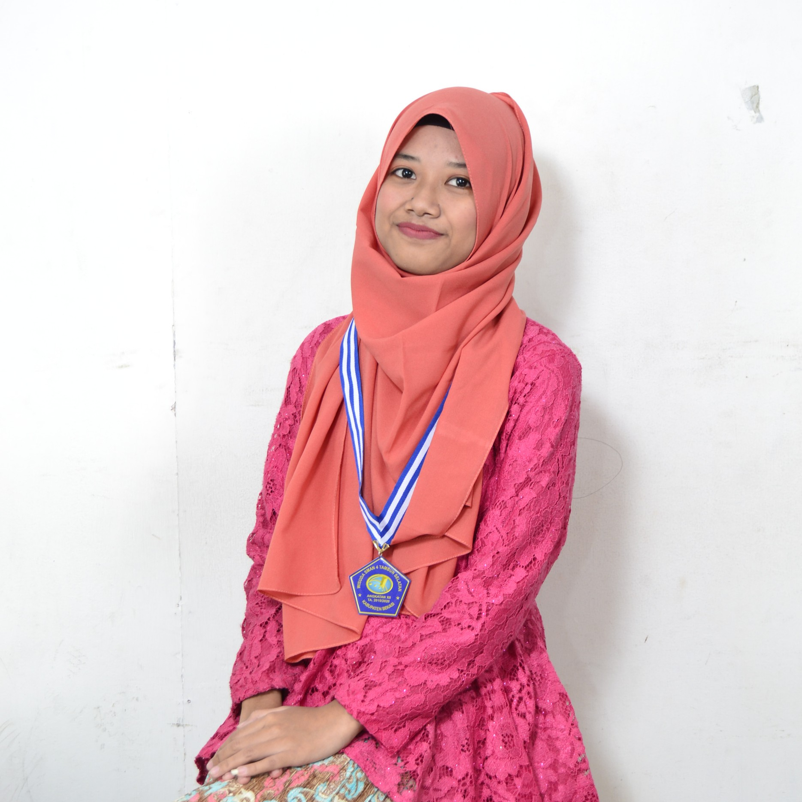

CURRICULUM VITAE

Facebook |
Instagram |
Twitter
"Biarpun impianmu telah gugur, tetapi kita bisa membuat impian baru yang lebih hebat dari impianmu yang sebelumnya. Yakinlah!"
No. Hp : 085711131508
Email : nurasrifebriyanti11@gmail.com
Informasi Pribadi
- Nama Lengkap : Nurasri Febriyanti
- Nama Panggilan : Asri
- Tempat tanggal lahir : Jakarta, 11 Februari 2002
- Jenis Kelamin : Perempuan
- Tinggi/Berat : 155cm/37kg
- Alamat : Griya Asri 2 Blok E16 No.17 RT/RW. 01/023, Desa Sumberjaya, Kec. Tambun Selatan, Kab. Bekasi, Jawa Barat
- Status : Belum Menikah
- Pekerjaan : Pelajar/Mahasiswa
- Kebangsaan : Indonesia
- Agama : Islam
Pendidikan Formal
| No |
Tingkat |
Sekolah |
Tahun |
| 1. |
TK |
TK Bina Putra |
2007-2008 |
| 2. |
SD |
SD Negeri Sumberjaya 03 |
2008-2014 |
| 3. |
SMP |
SMP Negeri 5 Tambun Selatan |
2014-2017 |
| 4. |
SMA (Peminatan IPS) |
SMA Negeri 4 Tambun Selatan |
2017-2020 |
| 5. |
S1 (Sarjana) |
STT Terpadu Nurul Fikri |
2020-Sekarang |
Keterampilan
- Mampu mengoperasikan MS. Word
- Gambar
- Menulis
Prestasi
- Siswa berprestasi kategori 10 besar peringkat paralel jurusan IPS di SMA.